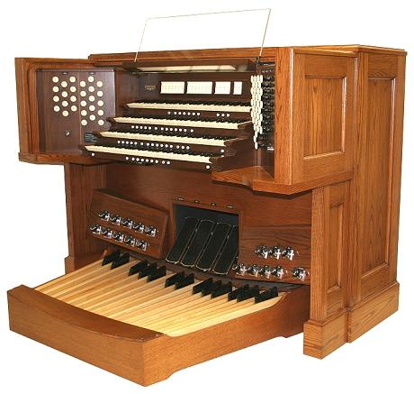

D.L. Simmons & Company Church Organs
Phoenix Organ Model PD 490 FOUR Manual Organs
- 360 stops -90 stops with octave couplers on each of four specifications
- All pipe samples can be identified as to the organ and church from which they were recorded
- Over 30 high resolution orchestral stops on Specification 4
- Specifications - American Romantic, German Baroque, French and Orchestral/Organ
- 14 General Toe and 10 General Thumb Pistons, 8 Divisional Thumb Pistons and 8 Pedal Toe Pistons
- 56 Klann Organ Supply Thumb Pistons and 30 Toe Pistons from Syndyne.
- Choice of Brass or Chrome toe pistons and Expression Pedals as standard
- 16 Independent Combination Memory Levels for each specification, totaling 64 (up to 99 optional)
- Swell, Choir and Solo Expression Pedals and Programmable Crescendo Pedal
- Expression and Crescendo Pedal Indicators (Bar Graphs)
- MIDI couplers for each Division in the event Hauptwerk is added in future
- 94 Syndyne Drawknobs
- 18 Peterson D-Style Coupler Tabs (both used by many pipe organ builders)
- Organ can be easily interfaced with pipes at any time
- Console will be custom stained to match church furnishings
- Only top quality hardwoods and veneers used in console / Solid Oak locking roll top
- AGO standard pedal board has Canadian Select Maple caps over Ash as with pipe organ pedal boards
- 4 Keyboards are tracker touch with Cherry naturals and Ebony sharps
- Lighted Acrylic Music Desk (Lighted, Lattice Desk optional) LED light for pedal board
- Note-by-note and stop-by-stop voicing using 11 different voicing parameters
- LCD operated by three thumb pistons - FN, Plus and minus
- Transposer +6, -6 (12 Key) / Console Clock is standard
- Auto Pedal / Reverb Level and Length Adjustments
- Fine Tuning Control / Master Volume Control
- 4 Temperaments - Equal, Werkmeister, Silberman and Velotti
- 20 Main audio channels and 2 delay channels of QSC Power Amplifiers.
- Total of 4,500 Watts of power / Reverberation System is Lexicon MX300 Processor
- Furman Power Sequencer with built-in surge protection and line conditioning

WEBSITE CONTENTS COPYRIGHT© 2015
DL SIMMONS & COMPANY CHURCH ORGANS
DL SIMMONS & COMPANY CHURCH ORGANS